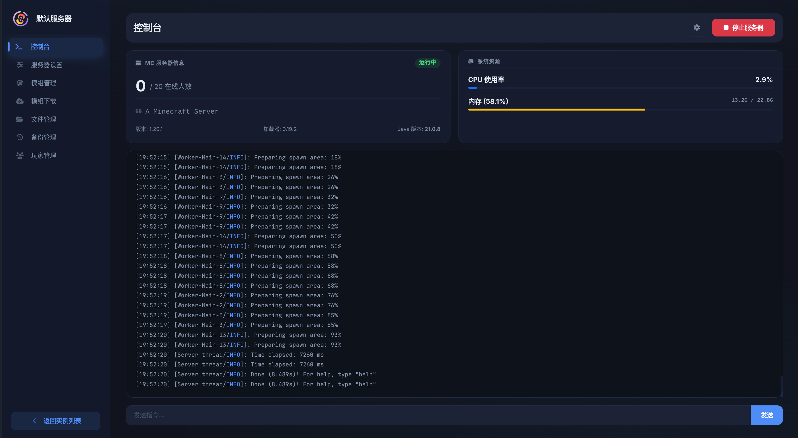
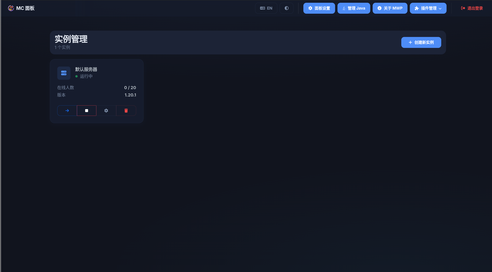

涵盖服务器管理的方方面面，从实时监控到文件管理，从玩家管理到插件扩展
实时查看服务器状态、CPU/内存使用率和控制台输出，一切尽在掌握
支持在线上传、下载、编辑和解压文件，无需 SSH 连接服务器
管理白名单、OP、黑名单，以及踢出/封禁/传送在线玩家
模块化架构，支持开发者轻松扩展后端逻辑与前端 UI
个性化主题设置，支持自定义背景图、模糊度及透明度
内置 FRP 管理，轻松实现公网访问，无需公网 IP
支持 2FA 双重验证（Google 身份验证器），保护面板安全
强大的备份还原系统，支持快照和增量备份
针对移动端和桌面端深度优化的 UI/UX 体验，随时随地管理
现代化的深色主题设计，直观的操作体验


从下载到运行，只需几分钟
将文件放在空目录中，运行可执行文件
./MWP-linux-amd64 start
打开浏览器访问面板，跟随设置向导配置
http://localhost:3000
如果你希望从源码运行面板（需要 Node.js 18+）
git clone https://github.com/4ystudio/mc-web-panel.git
cd mc-web-panel && npm install
npm run start